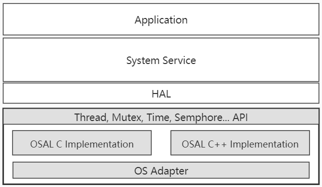

Overview
The OS Abstraction Layer (OSAL) is a component that provides a unified interface to the application, which can easily use the interfaces without knowing the underlying OS. OSAL component provides both C and C++ interfaces, including condition, mutex, thread, time, semaphore, and memory interfaces. The architecture is shown in the following figure.
{kind=link}

Interfaces
OSAL C Interfaces
Condition
API |
Introduction |
|---|---|
<OsalConditionInit> |
Initialize a condition |
<OsalConditionWait> |
Wait on condition |
<OsalConditionWaitRelative> |
Wait on condition with relative timeout |
<OsalConditionSignal> |
Signal the condition, allowing one thread to continue |
<OsalConditionBroadcast> |
Signal the condition, allowing all threads to continue |
<OsalConditionDestroy> |
Release a condition |
Memory
API |
Introduction |
|---|---|
<OsalMemAlloc> |
Allocate memory of a specified size |
<OsalMemCalloc> |
Allocate memory of a specified size, and clear the allocated memory |
<OsalMemFree> |
Release the memory |
Mutex
API |
Introduction |
|---|---|
<OsalMutexInit> |
Initialize a mutex |
<OsalMutexLock> |
Lock the mutex |
<OsalMutexTrylock> |
Try to lock the mutex. It returns that whether the mutex is in locked state |
<OsalMutexUnlock> |
Unlock a mutex. |
<OsalMutexDestroy> |
Release a mutex |
Semaphore
API |
Introduction |
|---|---|
<OsalSemInit> |
Initialize a semaphore |
<OsalSemWait> |
Wait for a semaphore |
<OsalSemPost> |
Release a semaphore |
<OsalSemDestroy> |
Destroy a semaphore |
Thread
API |
Introduction |
|---|---|
<OsalThreadCreate> |
Create a thread |
<OsalThreadBind> |
Bind a thread to a specified CPU |
<OsalThreadStart> |
Start a thread |
<OsalGetThreadID> |
Get thread ID of a thread |
<OsalGetCurrentThreadID> |
Get thread ID of the current running thread |
Osal Timer APIs
API |
Introduction |
|---|---|
<OsalSleep> |
Thread sleep in seconds |
<OsalMSleep> |
Thread sleep in milliseconds |
<OsalGetTime> |
Get current time according to the clock type |
<OsalGetSysTimeMs> |
Get current time in milliseconds |
<OsalGetSysTimeNs> |
Get current time in nanseconds |
OSAL C++ APIs
Condition
API |
Introduction |
|---|---|
<Condition::Condition()> |
Initiate a condition |
<Condition::~Condition()> |
Destroy a condition |
<Condition::Wait()> |
Wait on a condition |
<Condition::WaitRelative()> |
Wait on a condition with relative timeout |
<Condition::Signal()> |
Signal the condition, allowing one thread to continue |
<Condition::Broadcast()> |
Signal the condition, allowing all threads to continue |
Mutex
API |
Introduction |
|---|---|
<Mutex::Mutex()> |
Initiate a mutex |
<Mutex::~Mutex()> |
Destroy a mutex |
<Mutex::Lock()> |
Lock a mutex |
<Mutex::TryLock()> |
Try lock a mutex |
<Mutex::Unlock()> |
Unlock a mutex |
Besides using class Mutex::Lock, Mutex::Unlock, user can use Mutex internal class Autolock to lock and unlock.
API |
Introduction |
|---|---|
<Autolock::Autolock()> |
Lock the mutex |
<Autolock::~Autolock()> |
Unlock the mutex |
Thread
API |
Introduction |
|---|---|
<Thread::Start()> |
Start to run a thread |
<Thread::PrepareToRun()> |
This function is used to override to do some thread initialization actions |
<Thread::RequestExit()> |
Request this thread to exit |
<Thread::RequestExitAndWait()> |
Request this thread to exit and wait until it exits |
<Thread::Join()> |
Join this thread until it exits |
<Thread::ThreadLoop()> |
The derived class needs to implement ThreadLoop(). The thread will start looper of this function. |
<Thread::IsRunning()> |
Whether this thread is running |
<Thread::IsExiting()> |
Whether this thread is exiting |